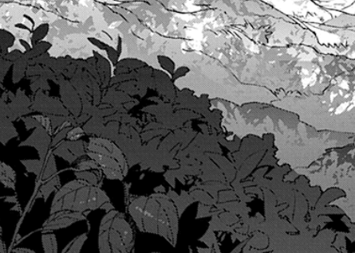
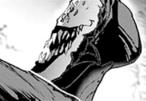
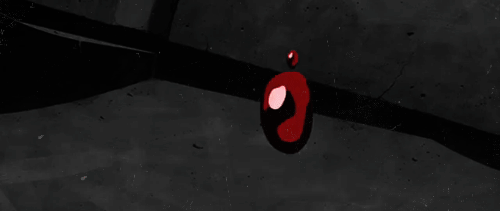

Still very intrigued at the thought of something new and being outside, you do the most bizarre thing and slowly make your way towards it. But the moment you spot its menancing presence, you hide behind the bushes quickly.
The creature was nothing like you've seen before. It had feminine features, its body was a slim shape at the waist with multiple eyes. The creature sat looking towards the open flame it created, then finishes her lullaby and tells a story.

"Thrown into a cruel fate with no way of survival, you hide yourselves in packs and protect each other. You all were stangers bonded together with the hope of escaping such an evil, evil world... but what happens when that hope disappears? How you've slowly lost your comrades one by one to the hands of such a superior being. Then you all doubt. "Who'll be next?" "I don't want to be it" To the point that fear destroys the loving pack you've created. With no option left, you start killing one another instead." it tells and shouts, "IT WOULD'VE BEEN BETTER IF YOU'VE NEVER KNOWN EACH OTHER AT ALL!"
You gasp loudly, startled by its sudden tone and the bush rustles. The creature turns towards your direction. Its menancing severalound eyes, tearing of fire, staring you down. With no time to lose, you dash as fast as possible and don't look back.
The sun was beginning to set and you try to spot the flower by going in a single direction. You finally find one and soon enough, the cottage starts taking shape. You enter within but there was already someone else inside. To your surprise, it was another creature. Much bigger than anything you've seen before, its cape covers the full length of its body, fully grown horns and a mask covering its face with a single eye - A DEMON.
It subdues you with a grip to your waist and you struggle to break free. It examines the whole cottage and finally speaks.
"So this is where you've been hiding this entire time! You even had time to replicate your shop!" it shouts and breaks every item within, "YOU'VE SLIPPED PAST ME AGAIN!"
Filled with abundant fury, it stares at you back and resents how you've doing so well.
"Not a single scratch to your body, YOU MUST HAVE BEEN SO PAMPERED WHILE I TOOK YOUR PLACE AND SUFFERED."
With the might of his bare hands, he crushes you completely and before your eye shuts down, you see him take the vial in your pouch and drink it.

"I'M COMING FOR YOU BROTHER."
To be continued...
There's more choices to select and more truth to be revealed.